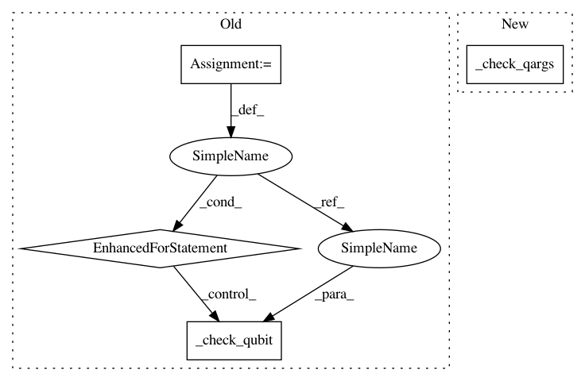

fcb04a8b59c52b6968d4d6f1b04ba89b45f5e9ba,qiskit/aqua/circuits/gates/multi_control_u3_gate.py,,mcu3,#Any#Any#Any#Any#Any#Any#,76
Before Change
if isinstance(target_qubit, QuantumRegister) and len(target_qubit) == 1:
target_qubit = target_qubit[0]
temp = []
for qubit in control_qubits:
try:
self._check_qubit(qubit)
except AttributeError as e: // TODO Temporary, _check_qubit may not exist
logger.debug(str(e))
temp.append(qubit)
try:
self._check_qubit(target_qubit)
except AttributeError as e: // TODO Temporary, _check_qubit may not exist
logger.debug(str(e))
After Change
target_qubit = target_qubit[0]
temp = []
self._check_qargs(control_qubits)
temp += control_qubits
self._check_qargs([target_qubit])
temp.append(target_qubit)
In pattern: SUPERPATTERN
Frequency: 4
Non-data size: 4
Instances
Project Name: Qiskit/qiskit-aqua
Commit Name: fcb04a8b59c52b6968d4d6f1b04ba89b45f5e9ba
Time: 2019-04-03
Author: shaohan.hu@ibm.com
File Name: qiskit/aqua/circuits/gates/multi_control_u3_gate.py
Class Name:
Method Name: mcu3
Project Name: Qiskit/qiskit-aqua
Commit Name: fcb04a8b59c52b6968d4d6f1b04ba89b45f5e9ba
Time: 2019-04-03
Author: shaohan.hu@ibm.com
File Name: qiskit/aqua/circuits/gates/boolean_logical_gates.py
Class Name:
Method Name: _do_checks
Project Name: Qiskit/qiskit-aqua
Commit Name: fcb04a8b59c52b6968d4d6f1b04ba89b45f5e9ba
Time: 2019-04-03
Author: shaohan.hu@ibm.com
File Name: qiskit/aqua/circuits/gates/multi_control_multi_target_gate.py
Class Name:
Method Name: mcmt
Project Name: Qiskit/qiskit-aqua
Commit Name: fcb04a8b59c52b6968d4d6f1b04ba89b45f5e9ba
Time: 2019-04-03
Author: shaohan.hu@ibm.com
File Name: qiskit/aqua/circuits/gates/multi_control_u1_gate.py
Class Name:
Method Name: mcu1
Project Name: Qiskit/qiskit-aqua
Commit Name: fcb04a8b59c52b6968d4d6f1b04ba89b45f5e9ba
Time: 2019-04-03
Author: shaohan.hu@ibm.com
File Name: qiskit/aqua/circuits/gates/multi_control_u3_gate.py
Class Name:
Method Name: mcu3